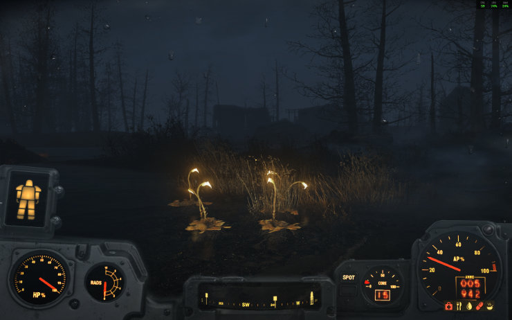

Far Harbor in Fallout 4: a tragic story of conflict
Although I played the entire story of Fallout 4 in 2016, when the game was released (I sided with the Institute back then), I have never really explored the questlines related to Fallout DLCs. In 2024 I finished the story of the Mechanist and her murderous robots, now the time has come to visit Far Harbor.
I had the initial quest, to visit the Nakano residence for quite a long time. I even tried to reach it way earlier in the game, which was not a good idea, considering I play in the Survival Mode. I got wrecked by feral ghouls and supermutants inhabiting abandoned ruins alog the northern shore. It brought a lot of frustration. That is why I decided to get back to this quest after I am done with the questline for Automatron DLC. I figured that at that time my level would be high enough to give me some opportunity to actually fight back the creatures standing between me and Far Harbor. This tactic proved to be successful and one fine day I took the boat to Far Harbor for the first time.
I had virtually zero knowledge of Far Harbor, its questline, locations and specifics, which allowed me to genuinely experience this DLC for the first time. I was surprised how gloomy, depressing and dangerous (especially for local people) that place actually was. The everpresent fog, along with the creatures hiding within, made all harbormen and women staying in a state of constant alert, with pesimistic view of the future.
Far Harbor island is a bleak place during the daytime, with thick fog obscuring the view and providing a hiding place for monsters and bandits.
The main plot revolves about conflict between three groups dwelling on the island. First one consists of the residents of eponymous settlement perched at the shore of the island. They try to survive almost regular attacks of various creatures hiding within the fog, although their settlement is safer now, that they have working fog condensers, keeping the fog at bay. By the way, I cannot omit the fact that the name of devices is misleading. Since the fog is water that has already condensed, i.e. it is in a liquid form, the condensers don’t actually condense anything. They can, at most, collect or absorb droplets of water that the fog is made from, but that has nothing to do with condensation.
Fog condensers play a vital role in protecting the biggest human settlement from creatures emerging from the fog. They also aid lost wanderers in returning to the safety of civilisation, however rudimentary it might be.
Anyway, the second group resides in an old astronomical observatory located in the heart of the island, in a place called Acadia. This group consists of synths: robots created by the Institute, who are undistinguishable from living humans. Their leader, DiMA, is an older generation synth, resembling humanoid robots as we know them, with wires, servos and actuators. DiMA wants Acadia to be a safe haven for all the synths who want to live a peaceful life (metaphorically, since they are not actually alive).
The third and arguably the weirest group are the Children of Atom. A flock of fanatics living in an old submarine base (and in a nuclear submarine itself) on the southern shore of the island. They believe that the Atom (that is, nuclear radiation) is a deity and deserves their prayers and devotion.
So, harbor people don’t trust synths from Acadia, because they believe the synths can infiltrate Far Harbor and even replace its human inhabitants one by one (they were actually right about the infiltration, although the history is much more complicated). Synths feel endangered by both Far Harbor and the Children of Atom. The Children of Atom simply want to kill off all residents of Far Harbor, since they believe them to be heretics, blind to the ways of the Atom. Player’s character is dropped right in the middle of this three-way conflict. One has to run some errands and complete quests for all of the factions, which ensures that we get to know each point of view. Actually, it’s the best to do all possible tasks for all three factions before one makes the final decision about supporting one group. This ensures the maximum amount of experience is gained, not to mention chance to buy some unique equipment.
Nevertheless, the final decision has dire consequences. I was not careful enough and my actions caused citizens of Far Harbor to attack Acadia and kill (destroy?) all the synths living there. I tried to stop them but apparently I have crossed a point of no return in the plot and could not do anything to stop the massacre of robots. I did feel uncomfortable about it, but as I was basically playing blindly, i.e. not knowing how my choices in various quests would affect the final outcome, it was to be expected. I would say that the quest line of Far Harbor was enjoyable and I hope to do another paythrough in a couple of years, maybe with a different choice.
 Lure weed, endemic to the island, can be used in some crafting recipes. To gather it one must ender dangerous bogs, where something far worse than fish can lurk…
What I liked about Far Harbor was, the entire biome was completely different from the mainland. I know every type of creature and enemy in Fallout 4, and I appreciated the fact that Far Harbor, as a partially isolated island ecosystem, has its unique flora and fauna. Most of the creatures I encountered were familiar from Fallout 76. Anglers, fog crawlers, gulpers, mirelurks. Truth be told, they were not much a challenge for my charater, because I was level 96 when I started the main quest line in Far Harbor. My S.P.E.C.I.A.L. stats were maxed out and I had several crucial perks active, which made fights far less dangerous, despite playing in the survival mode. The most annoying thing that happened (twice, actually), was a sudden CTD while I was exploring the Cranberry bog island. The first time, I caused me to loose about 50 minutes of progress, the second time — about a quarter of an hour. I still do not know why it happened, but besides those two events, evetyhing in Far Harbor ran smoothly.
Unique ecosystem of Far Harbor allows for some new species of fauna to dwell there, along with creatures one knows from the mainland. They all have one in common: want to make player character their next meal.
I think that my favourite part of Far Harbor is the atmoshpere during the nighttime, when the fog creeps closer and obscures your vision. If not for V.A.T.S. one could not know if there is a gulper devourer ready to make player’s character his next meal hiding merely feet away. I also loved the mesmerising glow of lure weed on the swamps within the island. They make an eerie yet intriguing sight (at least till you realise one of the lights came from an angler, and not a lure weed at all…).
Althought my adventures in Far Harbor are done, I was sad to return to the mainland and continue main Fallout 4 quests. I still have Nuka World to visit, and in this case as well I know nothing about the location or tasks that await me. I am curious which DLC location I will like more, Far Harbor or Nuka World.
This is article no. 15 from the 100 Days To Offload series.